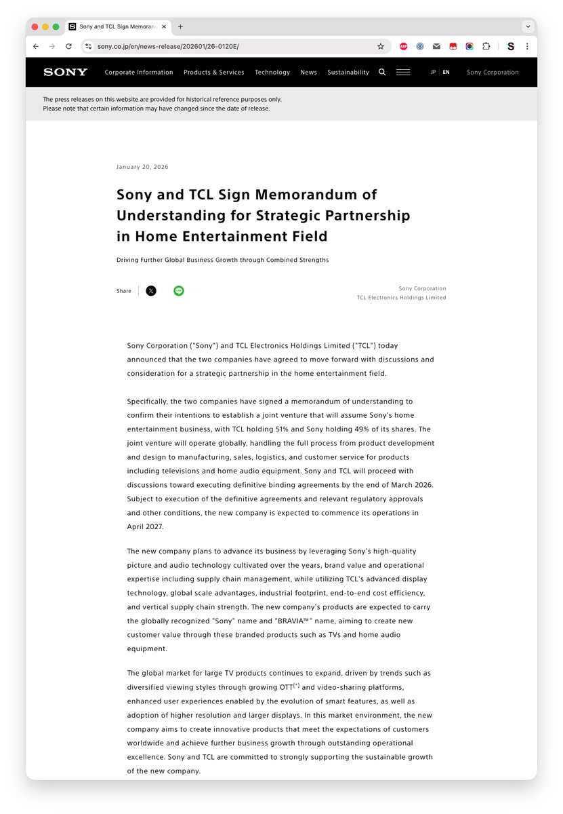

RT @passluo: 【Sony 官网消息】Sony 将剥离电视和音响业务，将其注入 Sony 与 TCL 合资的公司，TCL 占股 51% ，Sony 占股 49%，新公司的产品将沿用 Sony 和 BRAVIA 品牌。
完了，以后没有 Sony ，只有 Tony 了…

完了，以后没有 Sony ，只有 Tony 了…

【Sony 官网消息】Sony 将剥离电视和音响业务，将其注入 Sony 与 TCL 合资的公司，TCL 占股 51% ，Sony 占股 49%，新公司的产品将沿用 Sony 和 BRAVIA 品牌。
完了，以后没有 Sony ，只有 Tony 了 https://t.co/cde8FcLYuY
完了，以后没有 Sony ，只有 Tony 了 https://t.co/cde8FcLYuY